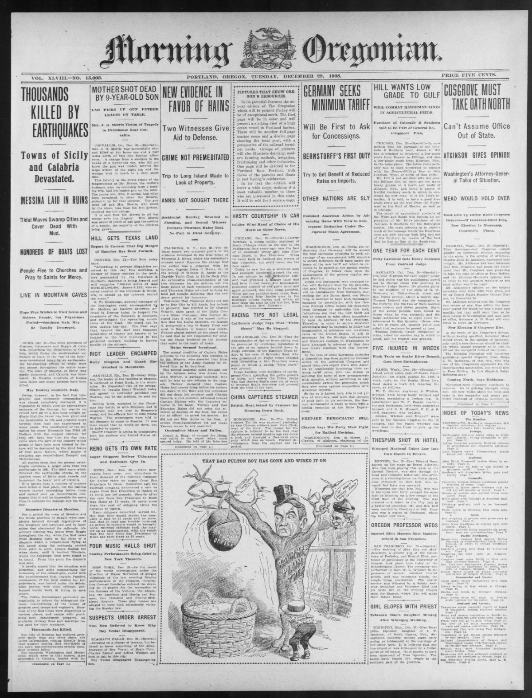
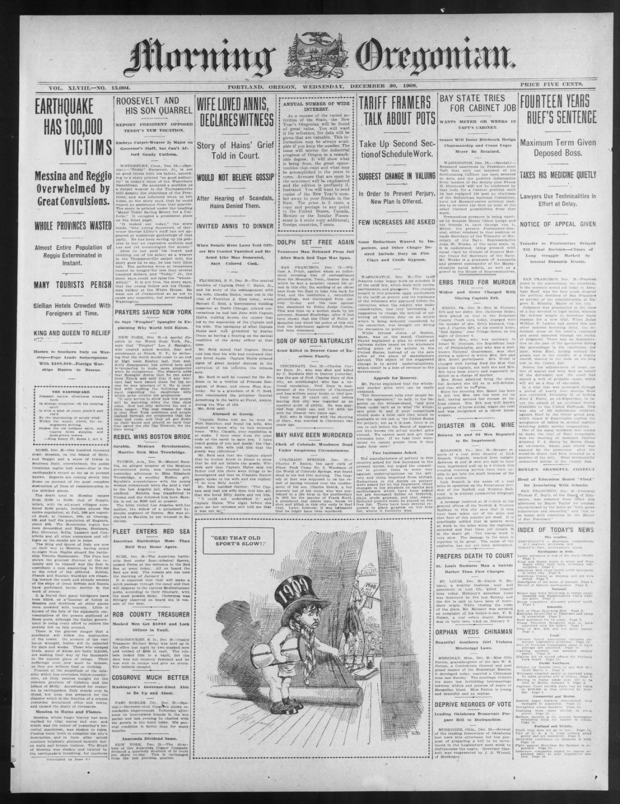
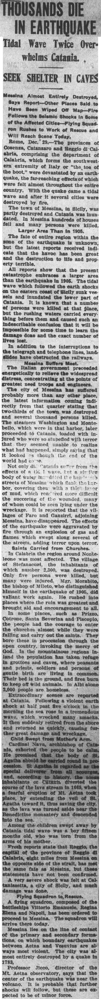
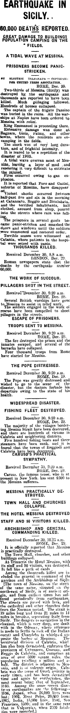

HN HN-366 · December 30, 1908 · Disasters, Accidents & Emergencies > Earthquakes & Volcanic Disasters > Earthquakes
1908 Messina earthquake first papers differ in quake geography and provisional casualties.
Source: Jasper County Democrat, p. 2 — original page; USGS seismic historical background.
Report: Following the December 28 earthquake, dispatches described ruin in Messina and Reggio Calabria, a destructive sea wave, fires, interrupted communications, and severe losses across Sicily and southern Italy. Some passages declared other settlements completely destroyed even while conceding that direct reports were unavailable.
Assessment: The earthquake and catastrophic destruction of the Messina Strait region are confirmed. The article's exact claims about Catania, vanished villages, total deaths, and supposed volcanic connections should not be adopted without geographic and seismological confirmation. Its phrase that whole towns vanished captures early uncertainty, not a mapped survey.
Class: Unverified lead (Q)
Recorded difference/concern: 1908 Messina earthquake first papers differ in quake geography and provisional casualties.
Assessment: Six original dated pages; extract their literal casualty counts and dateline before adjudicating.
Source links: https://oregonnews.uoregon.edu/lccn/sn83025138/1908-12-29/ed-1/seq-1/ https://oregonnews.uoregon.edu/lccn/sn83025138/1908-12-30/ed-1/seq-1/ https://paperspast.natlib.govt.nz/newspapers/ME19081230.2.10.1
Authentic images retrieved from Historic Oregon Newspapers (University of Oregon), Hoosier State Chronicles (Indiana State Library) and Papers Past (National Library of New Zealand). Article crops are located using the archive's own OCR word coordinates and rendered at native crop resolution; article clips are assembled from the archive's own article-block images; page images marked "archive tiles" are stitched from the archive's own tiled page service at its 256-px tile cap; page images marked "issue PDF" are single pages rasterised from the archive's own issue PDF, with the page chosen by matching the headline against the PDF's text layer; page scans are reduced-size access renditions. No images were generated, mocked, or retouched.




Not yet acquired. Queued for provider-specific acquisition testing (see source-acquisition manifest).
URL (preserved verbatim): https://newspapers.library.in.gov/?a=d&d=JCDC19081230.2.14
Saved research report: Historical_Newspaper_Event_Research_353-377_2026-10-23.md
Evidence note: A newspaper report means a historical publication made a claim; it does not establish that claim as fact. Contemporary reporting is separated from later scholarly context and our own assessment.